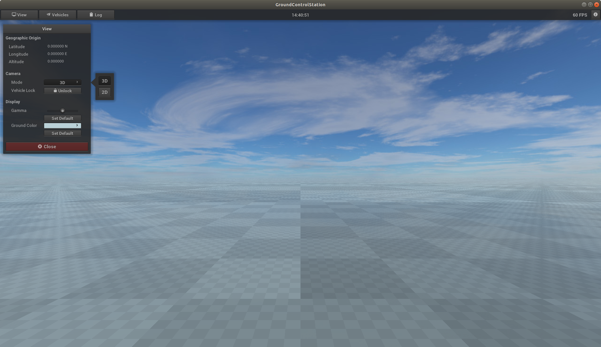

Overview (GUI)
In the upper bar (toolbar) there are buttons to open additional windows. In the middle of the toolbar the
current
local time is displayed. On the right side the number of frames per second (FPS) is
shown. This value should be 60. The actual graphical display shows a checkerboard pattern at z=0. The smallest
square has a size of 1 m x 1 m. The next sizes 10 m x 10 m and 100 m x 100 m are marked by correspondingly larger
superimposed checkerboard patterns.

Toolbar
The toolbar contains the following buttons: